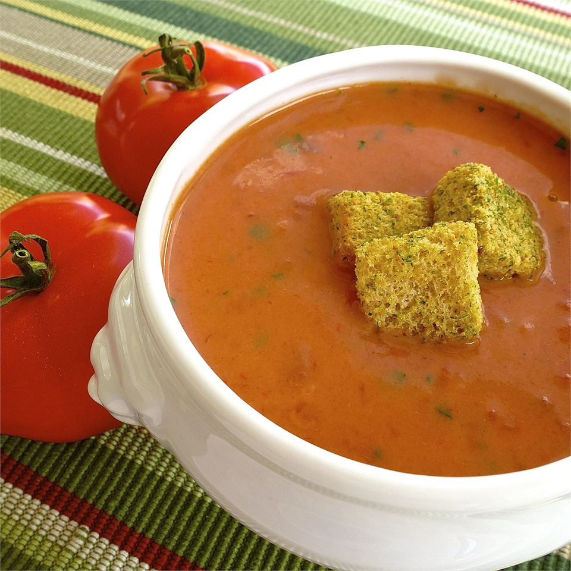

Quick and Easy Cream of Tomato Soup

Discription
This quick and easy cream of tomato soup is a great way to use up last season's canned tomatoes.
Ingredients
- 1 (28 ounce) can diced tomatoes in juice
- ½ teaspoon baking soda
- 1 (10 ounce) can condensed tomato soup
- 1 tablespoon dried parsley
- 2 teaspoons white sugar
- 1 teaspoon margarine
- ½ teaspoon chicken base
- ¼ teaspoon ground white pepper
- 2 cups whole milk
Steps
- Simmer diced tomatoes in juice in a saucepan over low heat until hot, 7 to 10 minutes.
- Add baking soda and let the mixture foam.
- Stir tomato soup, parsley, sugar, margarine, chicken base, and white pepper into the tomato mixture; cook until hot, about 5 minutes.
- Pour milk into tomato mixture and stir; cook until hot, about 5 minutes.